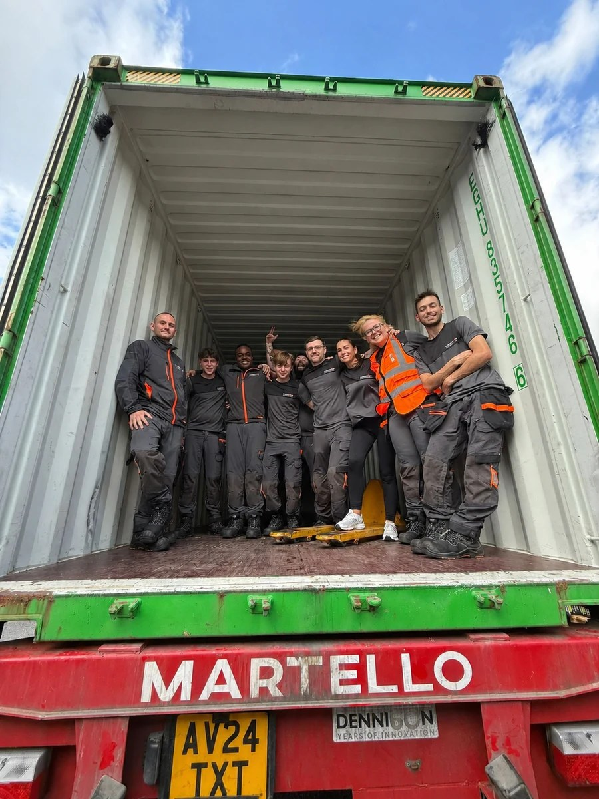

Not everyonearrives bythe same route.
Exit signs point out. This one points in. A fire safety business in Bury with a working route from potential that conventional hiring misses to skills, responsibility and lasting work. Break the glass.
Everyonedeservesa way in.
Real work. Practical support. A route into lasting employment. Eight people came in this way. This is the programme, the people, and the evidence behind it.
We're Freedom Firea fire safety business in Bury that supplies, installs and services the equipment that keeps buildings compliant, and sells it nationwide online. Hiring by CV alone kept missing people who could do the work.
A CV-first process rewards a polished history. It says little about whether someone can learn a warehouse, a service van or a storefront, and nothing about what they will do with a real chance. Since 2021 the company has hosted placements from a local college, opened its vacancies to Jobcentre referrals, and from September 2025 taken T Level students on industry placements. People come in on a route, get practical support and real responsibility, and are kept on where the work justifies it. The Way In is that route, written down, with its evidence. Fire safety remains what the business is for; this is how it is crewed.
The route in →One route. Six stages.
The programme is a repeatable process, not a set of stories. Every person who has come in has moved along the same six stages, and each stage has an owner and a record.
Referral or placement
A college placement, a T Level industry placement, a Jobcentre referral, or a student who needs work that fits around study.
Supported start
A named person to learn from, the adjustments the job needs to fit the person, and a first task that is real.
Workplace skills
Learned by doing: warehouse and fulfilment, service and installation, web and ecommerce, IT.
Responsibility
Something the person owns, from an order queue to a storefront, with the trust to get it wrong and fix it.
Paid work or next step
A long-term role at Freedom Fire where the work justifies it, or a clear next destination in work or education.
Progression and mentoring
Showing the next person the same route, and moving up the business as it grows.
- Since
- 2021, with learners from Newbridge College; T Level industry placements from September 2025 with the Growth Company
- Volume
- Eight people to date, five of them on placements
- Delivered by
- On the job, alongside experienced staff, in the warehouse, on the vans and in the web and ecommerce team
- Owner
- Tom Letcher, founder and programme sponsor
- Outcome measured
- Progression to a paid role, or a confirmed next destination
- Evidence
- PO-AC-01 · placement agreements and college correspondence
- Since
- Vacancies open to Jobcentre Plus referrals; two of the eight came this way
- Volume
- Two referrals hired to date
- Delivered by
- No degree filter, no experience wall; adjustments offered before the interview; attitude is what is screened for
- Owner
- Tom Letcher
- Outcome measured
- Referrals hired and retained
- Evidence
- PO-AC-02 · referral and offer records
Mentoring and job-related training happen inside every placement, but they are not counted as separate activities until mentor hours are logged. Logging began in September 2026.
Eight people. Their own words, or none.
Ticked present as you reach them. Each card shows a first name, a role and the route in. A full profile appears only once the person has approved every word of it, and says only what they choose to say.
Tom Letcher
Founder, programme sponsor and mentor. Started the company in 2021 and still does the hiring. The programme is his decision to recruit for potential rather than for a finished CV; he is its owner, not one of its participants.
Four groups. What changed for each.
The award asks for benefits to the people supported, the organisation, its employees and the wider community. Each panel gives a number, says how it was counted, and where there is a voice, carries one.
The people supported
Eight people supported since 2021. Three T Level students offered long-term roles in June 2026, nine months after starting. One early college placement progressed to a long-term full-time role. Skills gained on the job: warehouse and fulfilment, IT, web development and ecommerce operations.
Counted from the participant register: unique people over 16, by route and start date. Sustained outcomes at 3, 6 and 12 months are being followed up from September 2026.
“Real work, real trust, and people kind enough to expect me to get good at it.” Bill, web developer
The organisation
Eight roles filled through the programme, across the warehouse, IT, web and ecommerce, which is most of the team that runs the online business day to day. The company's website and storefronts were built by people who arrived on placements.
Counted from roles held as at September 2026 against the participant register. Retention is reported against the same register.
The employees
Experienced staff mentor each new starter on the job, which gives them supervisory experience they would not otherwise have in a business this size. Placement students have moved from being mentored to mentoring the next intake.
Mentor hours were not logged before September 2026. Logging began then, and the first full period will be reported here with the count.
The wider community
Three standing partnerships: Newbridge College since 2021, the Growth Company for T Level placements from 2025, and Jobcentre Plus for referrals. Every person hired lives locally to Bury, and a trade wage now comes into households that did not have one before.
Counted from partner records and placement agreements. Partner confirmations of dates and cohorts are being collected for the record.
Three doors the route comes through.
Independent organisations that refer people to the programme or place them on it. Names only, until each has confirmed what appears here; a partner's letter carries more weight than anything the company says about itself.
Newbridge College
Placements for learners, including young people with additional needs, from 2021. The earliest partnership, and the one that produced the first progression into a long-term role.
- Provides
- Placement learners and their support plans
- Relationship
- Five years, repeat cohorts
- Evidence
- PO-PT-01 · placement agreements and correspondence; confirmation letter requested
The Growth Company
Supports the company's T Level industry placements. Three students in the first cohort, each offered a long-term role by June 2026.
- Provides
- T Level students, placement structure and employer support
- Relationship
- One year, first cohort complete, second in preparation
- Evidence
- PO-PT-02 · T Level placement paperwork; confirmation letter requested
Jobcentre Plus
Vacancies are open to Jobcentre referrals with no degree or experience filter. Two of the eight came in this way.
- Provides
- Referred candidates
- Relationship
- Ongoing
- Evidence
- PO-PT-03 · referral and offer records
Five years, dated.
The award needs at least two years of qualifying activity with a dated record behind it. This is the spine, from the earliest placement to the next cohort, with the entity each entry belongs to.
- 27 August 2021Freedom Fire & Safety Ltd incorporated, company 13589467.FFSL · Verified · PO-CO-01
- 2021First placements for learners from Newbridge College, including young people with additional needs.FFSL · Management data · PO-TL-01
- 2021 – 2024An early college placement progresses into a long-term full-time role; placements continue each year.FFSL · Management data · PO-TL-02
- September 2025T Level industry placements begin with the Growth Company: three students.FFSL · Management data · PO-TL-03
- June 2026All three T Level students offered long-term roles.FFSL · Management data · PO-TL-04
- September 2026Mentor-hour logging and outcome follow-up begin; the next cohort is in preparation.FFSL · Target · PO-TL-05
The two-year test
Applications for the 2027 awards close on 8 September 2026, so the earliest dated record has to be from 8 September 2024 or before. The earliest placement agreement with Newbridge College is that record, and it has to belong to the company, not to the sole-trader years before it.
Enter the date on the earliest record and the tag gives its verdict.
Feedback, then a change.
A living programme adjusts. Three cases in the same shape: what was said, what was changed, and what was seen afterwards. Then what is being measured from now on.
- Feedback
- The first T Level cohort said the difference between a placement and a job was being trusted with something real.
- Adjustment
- Every placement now starts with a live brief the person owns, not shadowing. The company website is one result.
- Observed
- All three students offered long-term roles at the end of the placement, June 2026.
- Feedback
- Some people needed the job shaped around them: hours around study, tasks matched to how they work best, a mentor they could ask without embarrassment.
- Adjustment
- Adjustments are offered before the interview and written into the start, rather than negotiated afterwards.
- Observed
- People who might not have got through a standard interview are now in long-term roles. Detail stays with the individuals.
- Feedback
- Reviewing the programme for this application showed that outcomes were real but the records were thin: no mentor hours, no follow-up dates.
- Adjustment
- From September 2026: a participant register with anonymous IDs, logged mentor hours, and follow-up at 3, 6 and 12 months.
- Observed
- The first full period is reported here when it exists. Until then this page says so rather than guessing.
Everything an assessor can check.
The eligibility statement, the award's five tests with where each is answered, the current commitments, and every material claim with its status and source. Printable. Confidential records are described here and supplied through the application, never uploaded.
Eligibility statement
Freedom Fire & Safety Ltd · 13589467 · Promoting Opportunity 2027A programme that supports people from disadvantaged backgrounds in improving their job skills and their chances of finding work
Defined, dated, with its outputs.
Part 02Part 03
One or more qualifying activities for at least two years
Work experience or careers advice · mentoring · interview and job-related training · recruitment open to everyone.
The activitiesThe two-year test
Benefits for the people supported, the organisation, the employees and the wider community
Four groups, with numbers and method.
Social mobility must not be the organisation's main focus
The exclusion.
Training providers and educational organisations may only apply with a business, or for their own employees
The second exclusion.
to linkT Level Ambassador Network · employer ambassador
T Level Ambassadors
Freedom Fire hosts T Level industry placements and speaks for them to other employers. Four of the eight people came through a T Level placement. This is the award's activity (a), work experience, as a standing arrangement.
Evidence to supplyThe ambassador listing or confirmation email, the date the company joined, and placements hosted per year. Committed, Level 1 · Level 2, Employer, in progress
Committed, Level 1 · Level 2, Employer, in progressDisability Confident
A public commitment to recruit, retain and adjust for disabled people. It is why recruitment is open to everyone in practice. Freedom Fire is Disability Confident Committed, Level 1, with Level 2 Employer accreditation in progress.
Evidence to supplyThe Level 1 confirmation and its date, and the adjustments policy in writing.Claims, status and source
| Claim | Definition and period | Status and source | Evidence |
|---|---|---|---|
| Company incorporated 27 August 2021 | Freedom Fire & Safety Ltd, 13589467; sole director since incorporation | Verified Companies House register | PO-CO-01 |
| Eight people supported | Unique people over 16, by route and start date, 2021 to September 2026; Tom excluded | Management data Participant register, placement agreements, contracts | PO-PR-01 |
| Placements since 2021 | Newbridge College learners from 2021; T Level placements from September 2025 | Management data Placement agreements, college correspondence | PO-AC-01 |
| Two Jobcentre referrals hired | Referred candidates offered and retained, to September 2026 | Management data Referral and offer records | PO-AC-02 |
| Three of three T Level students offered long-term roles | First cohort, September 2025 to June 2026 | Management data Offer letters, T Level paperwork | PO-PR-02 |
| One early placement progressed to long-term full-time work | College placement to employment; employing entity and dates confirmed in the record | Management data Contract and payroll, on request | PO-PR-03 |
| Roles filled through the programme | Eight roles across warehouse, IT, web and ecommerce, as at September 2026 | Management data HR records | PO-OR-01 |
| Mentor hours and follow-up outcomes | Logged from September 2026; reported after the first full period | Target Mentor log, follow-up at 3, 6 and 12 months | PO-TG-01 |
| Disability Confident | Committed, Level 1; Level 2 Employer in progress | Management data Level 1 confirmation | PO-CM-01 |
| T Level Ambassador | Employer ambassador in the T Level Ambassador Network | Management data Network listing, to link | PO-CM-02 |
Statuses: Verified is a public or independent source or a signed formal record. Management data is a named internal system or record, dated. Target is an ambition with its assumptions stated. Anything outstanding is held back from this page until it is resolved. Sole-trader history before August 2021 is not counted in any figure here. Headcount is stated only on a payroll definition, through the application. The claim register behind this page is held as structured data with an owner and a last-checked date for every entry; no confidential file is published.
The door stays open.
The programme continues whether or not an award follows. The next cohort of T Level placements is in preparation for the coming year. Mentoring becomes a formal role with logged hours. Outcomes are followed up at three, six and twelve months. Disability Confident moves to Level 2 when it is earned, not before. The college partnerships deepen, and the programme has one owner, Tom Letcher, who answers for it.